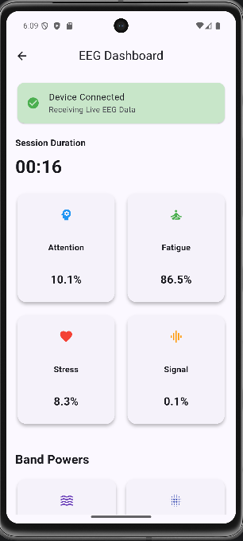

Neuroscience
Research Initiative
Understanding the Human Mind
Understanding the Human Mind
through EEG & Artificial Intelligence
Nurolab is an interdisciplinary research initiative focused on developing intelligent systems for understanding cognitive and mental well-being using Electroencephalography (EEG), Artificial Intelligence, Signal Processing, and Human-Centered Technology.
EEG
Artificial Intelligence
Neuroscience
Signal Processing
LIVE SESSION
Processing
Delta
42%
Theta
28%
Alpha
71%
Beta
35%
Gamma
18%
0.82
Relaxation
0.43
Engagement
Mild
Risk Tier
THE PROBLEM
Mental health is usually assessed by asking, not measuring.
Millions of people experience cognitive and mental-health challenges. Today's tools rely heavily on self-reported symptoms and clinical observation. Nurolab explores objective EEG-based physiological evidence to complement-not replace-professional care.
Self Reports
Low cost and widely used, but influenced by memory, mood and personal perception.
Clinical Evaluation
Accurate and valuable, but dependent on trained professionals and scheduled assessments.
Nurolab's Approach
Continuous EEG monitoring combined with AI provides objective physiological insights to support clinicians.
Our Prototype
Meet the headset that actually reads the signal.
A lightweight AI-powered wearable designed for real-time EEG acquisition, intelligent signal processing, and cognitive health research.

Key Features
01
8-Channel Dry EEG Sensors
Dry electrodes for accurate real-time EEG recording.
02
ADS1299 Analog Front End
24-bit low-noise EEG signal acquisition.
03
ESP32 Edge Processor
Onboard processing and wireless data streaming.
04
Bluetooth & Wi-Fi
Fast wireless connection to the mobile app.
05
Lightweight Design
Comfortable for extended monitoring sessions.
06
Long Battery Life
Up to 10 hours of continuous operation.
Companion App
NuroLab Mobile Application
A demo preview of the companion app, still early in development - it shows how the headset will pair to stream EEG data, run AI analysis, and let researchers review past sessions from a phone, not a finished product yet.
NuroLab Mobile Application

Features
A single dashboard for the whole session - connect the headset, watch your EEG bands live, and keep every reading on record.
- ✓ Live EEG Monitoring
- ✓ Bluetooth Connectivity
- ✓ AI Analysis
- ✓ Session History
Core Technologies
Research Areas
Nurolab combines neuroscience, EEG technology, artificial intelligence, and human-centered design to build intelligent systems for understanding cognitive and mental well-being.
EEG Technology
Artificial Intelligence
Signal Processing
Human-Centered Technology
Future Innovation
Intelligent Workflow
How Nurolab Works
Nurolab follows an intelligent pipeline that transforms raw EEG signals into meaningful cognitive insights using advanced signal processing and artificial intelligence.
1
EEG Signal Acquisition
Brain activity is captured using wearable EEG sensors in real time.
2
Signal Processing
Remove noise, detect artifacts and preprocess EEG signals for reliable analysis.
3
AI Analysis
Machine Learning and Deep Learning models identify cognitive patterns, attention levels and mental workload.
4
Insights Dashboard
Interactive dashboards present interpretable reports and wellness-oriented recommendations.
RESEARCH VALIDATION
Evidence Built on Real Research Data
Our algorithms are evaluated using benchmark EEG datasets and pilot studies to ensure transparent, measurable, and reproducible results.
✓ Verified
89.4%
Clinical Accuracy
Validated using the Bonn University EEG benchmark dataset.
✓ Verified
320
Extracted Features
Feature extraction across 8 EEG channels.
✓ Verified
<150 ms
Processing Speed
End-to-end EEG processing latency.
Preliminary
37.8%
Pilot Study
Current depression screening accuracy.
Research Transparency
37.8% Current Pilot Accuracy
Our current depression detection model has been evaluated on seven pilot participants. These results are preliminary and will continue to improve as more data is collected.
Open Science
Our research code, signal-processing pipeline and model development are openly documented.
View GitHub Repository →
Interactive Demonstration
EEG Signal Processing Simulation
Explore how raw EEG brain signals are progressively cleaned, processed and analysed before Artificial Intelligence generates meaningful cognitive insights.
Signal simulation - based on public EEG data
What happens to the signal at each step
Watch the same signal change shape as it passes through the pipeline - from raw and noisy, to filtered, to a final risk reading.
Normal
Compared against this person's own calm baseline
Our Team
Meet the Contributors
Nurolab is a collaborative project developed by students and researchers specializing in EEG signal processing, artificial intelligence, hardware, software engineering, documentation, and web development.
Riddhi
Aarti
Vandana
Suruchi
Yashvi
Hardware Team
Development Team
Where We Are
Honest Progress
What is complete, what is in progress, and what comes next in the Nurolab project.
Phase 1 • Complete
EEG Research Platform
EEG acquisition, signal processing, AI pipeline and web platform completed.
Phase 2 • In Progress
AI Model Improvement
Improving accuracy with larger EEG datasets and advanced machine learning models.
Phase 3 • Planned
Hardware Integration
ADS1299 and ESP32 based wearable headset integrated with the Nurolab platform.
Phase 4 • Future
Clinical Validation
Collaborate with research institutions for large-scale clinical validation.
Help us build this further
Nurolab is an open, student-led research project. Whether you want to contribute code, help with EEG research, or simply follow along, there's a place for you here.